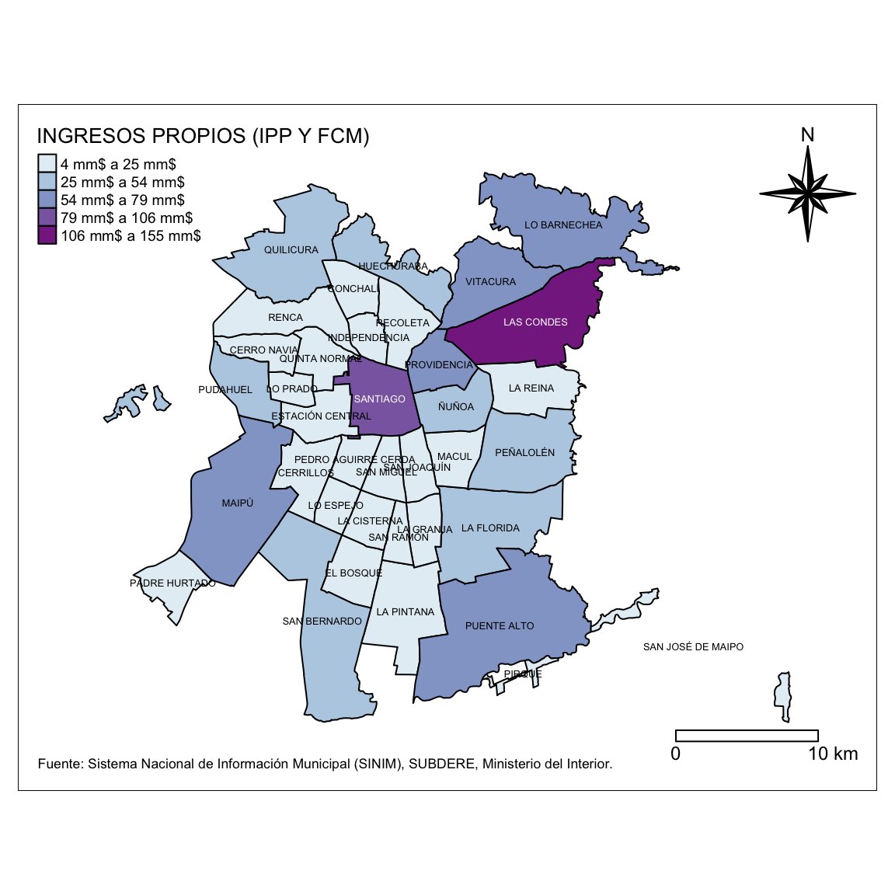
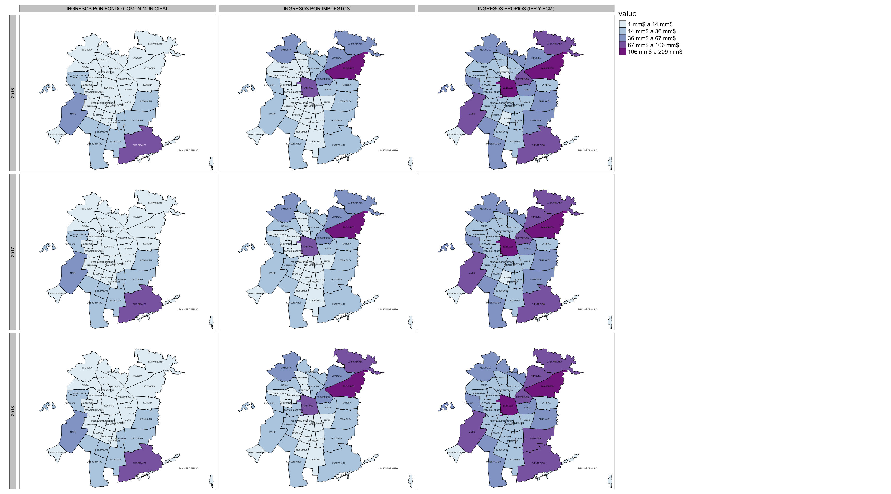
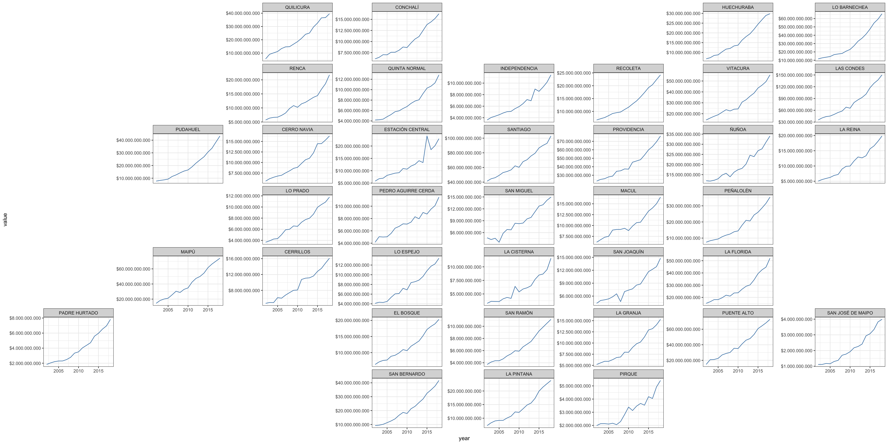

Chilean Municipalities Information System Wrapper
What can I do with this?
This R package allows easy SINIM (http://sinim.gov.cl) data retrieval what have advantages over the site:
- When you work with multiple variables or years it will be very useful for rapid analyses.
- Fast ploting directly from data source using the included geometries.
- Data download with or without monetary correction using a switch.
library(dplyr)
library(sinimr)
library(sf)
library(tmap)
varcode <- 882
var <- get_sinim(varcode, 2018,
region = 13,
truevalue = T,
geometry = T,
auc = T,
unit = "limites")
gran_santiago_plot <- tm_shape(var) +
tm_fill(col = "value",
palette = "BuPu",
border.col = "white",
border.alpha = 0.5,
lwd=1,
style = "jenks",
title = get_sinim_var_name(varcode))+
tm_text("municipality", size = 0.4, style="jenks") +
tm_legend(legend.position = c("left", "top"), legend.title.size = 1, legend.text.size = 0.6) +
tm_compass(type = "8star", position = c(.85, .80)) +
tm_scale_bar(breaks = c(0, 10), text.size = 0.75, position = c("right", "bottom")) +
tm_credits("Fuente: Sistema Nacional de Información Municipal (SINIM), SUBDERE, Ministerio del Interior.", position=c("left", "bottom"), size=0.55)+
tm_layout(legend.width=1,
inner.margins = c(0.1, 0.1, 0.10, 0.1),
legend.format = list(text.separator = "a",
fun = mm)) +
tm_borders(col = 'black')
gran_santiago_plot
Support
FONDECYT Regular 2016 Nº 1161417, ¿Quién es responsable del desarrollo local? Una geografía política del neoestructuralismo en “comunas de exportación” (Comisión Nacional de Investigación Científica y Tecnológica).
A note on usage
When querying the API, please be respectful of the resources required to provide this data. Please retain the results for each request to avoid repeated requests for duplicate information.
Installation
install.packages("devtools")
devtools::install_github("robsalasco/sinimr")How do I use it?
sinimR comes with a small set of functions to deliver the content of SINIM’s webpage. To get a first glance of the categories of information what are available please use the get_sinim_cats() command.
library(sinimr)
get_sinim_cats()
#> $`-`
#> variable code
#> 1 * SIM FIMU 539
#>
#> $`01. ADMINISTRACION Y FINANZAS MUNICIPALES`
#> variable code
#> 1 A.1. PRESUPUESTO INICIAL Y VIGENTE MUNICIPAL (M$) 517
#> 2 A. INGRESOS MUNICIPALES (M$) 21
#> 3 B. INGRESOS MUNICIPALES (%) 191
#> 4 C. GASTOS MUNICIPALES (M$) 22
#> 5 D. GASTOS MUNICIPALES (%) 172
#> 6 E. GASTOS EN PERSONAL 169
#> 7 F. TRANSFERENCIAS E INVERSION 170
#> 8 G. SERVICIOS BASICOS Y GENERALES 370
#> 9 I. TRANSFERENCIAS Y COMPENSACIONES SUBDERE 485
#> 10 J. FONDO COMÚN MUNICIPAL (FCM) 508
#> 11 K. GESTION MUNICIPAL 486
#> 12 L. 24
#> 13 M. 506
#>
#> $`02. RECURSOS HUMANOS MUNICIPAL`
#> variable code
#> 1 A. PERSONAL DE PLANTA 381
#> 2 B. PERSONAL A CONTRATA 382
#> 3 C. HONORARIOS 383
#> 4 D. OTROS INDICADORES 384
#>
#> $`03. EDUCACION MUNICIPAL`
#> variable code
#> 1 A. ANTECEDENTES GENERALES DE EDUCACION 38
#> 2 B. ASISTENCIA Y MATRÍCULAS EN EDUCACION 32
#> 3 C. RESULTADOS PSU 33
#> 4 D. INGRESOS EN EDUCACION MUNICIPAL 35
#> 5 E. GASTOS EN EDUCACION MUNICIPAL 36
#> 6 F. RECURSOS HUMANOS EN SECTOR EDUCACION 34
#> 7 G. ESTABLECIMIENTOS DE EDUCACION MUNICIPAL 379
#>
#> $`04. SALUD MUNICIPAL`
#> variable code
#> 1 A. ANTECEDENTES GENERALES DE SALUD 30
#> 2 B. COBERTURA EN SALUD MUNICIPAL 25
#> 3 C. INGRESOS EN SALUD MUNICIPAL 26
#> 4 D. GASTOS EN SALUD MUNICIPAL 28
#> 5 E. RED ASISTENCIAL SALUD 31
#> 6 F. RECURSOS HUMANOS EN SALUD 362
#>
#> $`05. SOCIAL Y COMUNITARIA`
#> variable code
#> 1 A. INFORMACION ENCUESTA CASEN 47
#> 2 B. RED SOCIAL (SUBSIDIOS Y PENSIONES) 44
#> 3 C. INTERMEDIACION LABORAL 43
#> 4 D. ORGANIZACIONES COMUNITARIAS 46
#> 5 E. BECAS 377
#> 6 F. PARTICIPACIÓN CIUDADANA 510
#> 7 G. DISCAPACIDAD 512
#> 8 H. PREVENCIÓN DEL DELITO 511
#>
#> $`06. DESARROLLO Y GESTION TERRITORIAL`
#> variable code
#> 1 A. CARACTERISTICAS TERRITORIALES 39
#> 2 B. SERVICIOS BASICOS A LA COMUNIDAD 41
#> 3 C. INFRAESTRUCTURA 40
#> 4 D. CATASTRO PREDIOS Y VALORACION CATASTRAL 300
#> 5 E. AREAS VERDES 376
#> 6 F. PLAN DE DESARROLLO COMUNAL (PLADECO) 304
#> 7 G. PLAN REGULADOR COMUNAL 42
#>
#> $`07. CARACTERIZACION COMUNAL`
#> variable code
#> 1 A. GEOGRAFICO ADMINISTRATIVA 49
#> 2 B. POBLACION 50
#>
#> $`08. GENERO`
#> variable code
#> 1 A. DOTACION FUNCIONARIA Y PROFESIONAL DE MUJERES 262
#>
#> $`09. CEMENTERIO`
#> variable code
#> 1 1. INFORMACION GENERAL 516
#> 2 A. INGRESOS CEMENTERIO (M$) 456
#> 3 B. GASTOS CEMENTERIO (M$) 457Every category have a bunch of variables associated. Use the CODE number and the get_sinim_vars() function to get them.
get_sinim_vars(517)
#> variable unit code
#> 108 Presupuesto Inicial Sector Municipal M$ 4210
#> 109 Presupuesto Inicial Gastos Municipales M$ 4211
#> 110 Presupuesto Vigente Sector Municipal M$ 4212
#> 111 Presupuesto Vigente Gastos Municpiales M$ 4213
#> 112 Presupuesto Vigente Saldo Inicial de Caja Sector Municipal M$ 4226
#> 113 Presupuesto Inicial Saldo Inicial de Caja sector Municipal M$ 4441Finally, to obtain the data across municipalities use the code column and specify a year.
head(get_sinim(c(4210, 4211), 2015))
#> code municipality year variable value
#> 1 1101 IQUIQUE 2015 PRESUPUESTO INICIAL GASTOS MUNICIPALES 35295076
#> 2 1107 ALTO HOSPICIO 2015 PRESUPUESTO INICIAL GASTOS MUNICIPALES 10263084
#> 3 1401 POZO ALMONTE 2015 PRESUPUESTO INICIAL GASTOS MUNICIPALES 7685704
#> 4 1402 CAMIÑA 2015 PRESUPUESTO INICIAL GASTOS MUNICIPALES 1319970
#> 5 1403 COLCHANE 2015 PRESUPUESTO INICIAL GASTOS MUNICIPALES 2130495
#> 6 1404 HUARA 2015 PRESUPUESTO INICIAL GASTOS MUNICIPALES 3267375By default the values are in miles de millones but it can be disabled using the truevalue = T switch.
head(get_sinim(c(4210, 4211), 2015, truevalue = T))
#> code municipality year variable value
#> 1 1101 IQUIQUE 2015 PRESUPUESTO INICIAL GASTOS MUNICIPALES 35295076000
#> 2 1107 ALTO HOSPICIO 2015 PRESUPUESTO INICIAL GASTOS MUNICIPALES 10263084000
#> 3 1401 POZO ALMONTE 2015 PRESUPUESTO INICIAL GASTOS MUNICIPALES 7685704000
#> 4 1402 CAMIÑA 2015 PRESUPUESTO INICIAL GASTOS MUNICIPALES 1319970000
#> 5 1403 COLCHANE 2015 PRESUPUESTO INICIAL GASTOS MUNICIPALES 2130495000
#> 6 1404 HUARA 2015 PRESUPUESTO INICIAL GASTOS MUNICIPALES 3267375000You can get multiple years too! use the command get_sinim() and add more years as in the example.
head(get_sinim(880, 2015:2017))
#> code municipality year variable value
#> 1 1101 IQUIQUE 2017 INGRESOS POR FONDO COMÚN MUNICIPAL 3439830
#> 2 1107 ALTO HOSPICIO 2017 INGRESOS POR FONDO COMÚN MUNICIPAL 7258188
#> 3 1401 POZO ALMONTE 2017 INGRESOS POR FONDO COMÚN MUNICIPAL 1888333
#> 4 1402 CAMIÑA 2017 INGRESOS POR FONDO COMÚN MUNICIPAL 1626482
#> 5 1403 COLCHANE 2017 INGRESOS POR FONDO COMÚN MUNICIPAL 1156020
#> 6 1404 HUARA 2017 INGRESOS POR FONDO COMÚN MUNICIPAL 1406921The geometries are available in long format using the geometry=T argument. By default it uses the comunal geographies but the limite urbano censal is also available. The switches are unit="comunas" and unit="limites". Note: Using limites not all features are available because some comunas are not related to urban zones. As shown in the example below you can obtain multiple years and variables in long format.
head(get_sinim(882, 2015:2017, geometry=T))
#> Simple feature collection with 6 features and 5 fields
#> geometry type: MULTIPOLYGON
#> dimension: XY
#> bbox: xmin: -70.20924 ymin: -21.43871 xmax: -69.81985 ymax: -20.04854
#> geographic CRS: WGS 84
#> code municipality year variable value
#> 1 1101 IQUIQUE 2016 INGRESOS PROPIOS (IPP Y FCM) 36638105
#> 2 1101 IQUIQUE 2015 INGRESOS PROPIOS (IPP Y FCM) 35186041
#> 3 1101 IQUIQUE 2017 INGRESOS PROPIOS (IPP Y FCM) 37924449
#> 4 1107 ALTO HOSPICIO 2017 INGRESOS PROPIOS (IPP Y FCM) 11377923
#> 5 1107 ALTO HOSPICIO 2016 INGRESOS PROPIOS (IPP Y FCM) 10913779
#> 6 1107 ALTO HOSPICIO 2015 INGRESOS PROPIOS (IPP Y FCM) 10705074
#> geometry
#> 1 MULTIPOLYGON (((-70.09894 -...
#> 2 MULTIPOLYGON (((-70.09894 -...
#> 3 MULTIPOLYGON (((-70.09894 -...
#> 4 MULTIPOLYGON (((-70.1095 -2...
#> 5 MULTIPOLYGON (((-70.1095 -2...
#> 6 MULTIPOLYGON (((-70.1095 -2...Another interesting feature is the possibility to subset by different contexts. e.g if you want the comunas of Antofagasta region this command is available. The command works with or without the presence of the geometry switch and other switches are avaiblable too region, provincia and comuna all working with codes.
head(get_sinim(882, 2015:2017, geometry=T, region=2))
#> Simple feature collection with 6 features and 5 fields
#> geometry type: MULTIPOLYGON
#> dimension: XY
#> bbox: xmin: -70.62886 ymin: -25.40293 xmax: -68.0676 ymax: -22.4254
#> geographic CRS: WGS 84
#> code municipality year variable value
#> 1 2101 ANTOFAGASTA 2015 INGRESOS PROPIOS (IPP Y FCM) 50480057
#> 2 2101 ANTOFAGASTA 2017 INGRESOS PROPIOS (IPP Y FCM) 53481425
#> 3 2101 ANTOFAGASTA 2016 INGRESOS PROPIOS (IPP Y FCM) 53775528
#> 4 2102 MEJILLONES 2016 INGRESOS PROPIOS (IPP Y FCM) 7031571
#> 5 2102 MEJILLONES 2015 INGRESOS PROPIOS (IPP Y FCM) 6400071
#> 6 2102 MEJILLONES 2017 INGRESOS PROPIOS (IPP Y FCM) NA
#> geometry
#> 1 MULTIPOLYGON (((-70.60654 -...
#> 2 MULTIPOLYGON (((-70.60654 -...
#> 3 MULTIPOLYGON (((-70.60654 -...
#> 4 MULTIPOLYGON (((-69.97002 -...
#> 5 MULTIPOLYGON (((-69.97002 -...
#> 6 MULTIPOLYGON (((-69.97002 -...You can get a subset too
head(get_sinim(882, 2015:2017, geometry=T, region=c(2,3)))
#> Simple feature collection with 6 features and 5 fields
#> geometry type: MULTIPOLYGON
#> dimension: XY
#> bbox: xmin: -70.62886 ymin: -25.40293 xmax: -68.0676 ymax: -22.4254
#> geographic CRS: WGS 84
#> code municipality year variable value
#> 1 2101 ANTOFAGASTA 2016 INGRESOS PROPIOS (IPP Y FCM) 53775528
#> 2 2101 ANTOFAGASTA 2015 INGRESOS PROPIOS (IPP Y FCM) 50480057
#> 3 2101 ANTOFAGASTA 2017 INGRESOS PROPIOS (IPP Y FCM) 53481425
#> 4 2102 MEJILLONES 2016 INGRESOS PROPIOS (IPP Y FCM) 7031571
#> 5 2102 MEJILLONES 2015 INGRESOS PROPIOS (IPP Y FCM) 6400071
#> 6 2102 MEJILLONES 2017 INGRESOS PROPIOS (IPP Y FCM) NA
#> geometry
#> 1 MULTIPOLYGON (((-70.60654 -...
#> 2 MULTIPOLYGON (((-70.60654 -...
#> 3 MULTIPOLYGON (((-70.60654 -...
#> 4 MULTIPOLYGON (((-69.97002 -...
#> 5 MULTIPOLYGON (((-69.97002 -...
#> 6 MULTIPOLYGON (((-69.97002 -...But where obtain the codes? a database is provided and you can filter it using the standard R functions.
head(id_geo_census)
#> code municipality code.reg nom.reg code.prov nom.prov auc
#> 1 1101 IQUIQUE 1 TARAPACA 11 IQUIQUE 1
#> 2 1107 ALTO HOSPICIO 1 TARAPACA 11 IQUIQUE 1
#> 3 1401 POZO ALMONTE 1 TARAPACA 14 TAMARUGAL 0
#> 4 1402 CAMIÑA 1 TARAPACA 14 TAMARUGAL 0
#> 5 1403 COLCHANE 1 TARAPACA 14 TAMARUGAL 0
#> 6 1404 HUARA 1 TARAPACA 14 TAMARUGAL 0Related to variables if you don’t know what are you looking for use search_sinim_vars()to get search results based on variable descriptions, names and groups.
search_sinim_vars("cementerio")
#> code
#> 361 4140
#> 362 4141
#> 363 4406
#> 364 4407
#> variable
#> 361 Ingresos Cementerio (Ingreso Total Percibido)
#> 362 Gastos Cementerio (Gasto Total Devengado)
#> 363 ¿La Municipalidad o Corporación administra Cementerio?
#> 364 Si la Municipalidad o Corporación administra Cementerio, indique si tiene presupuesto propio. SI = presupuesto propio o independiente.
#> description
#> 361 Ingreso total percibido del sector Cementerio (clasificador presupuestario)
#> 362 Gastos total devengado sector Cementerio (clasificador presupuestario).
#> 363 Indica si la Municipalidad o Corporación administra o no Cementerio Municipal, ya sea con presupuesto propio o asociado a otro sector de la municipalidad o corporación.
#> 364 Indica si administra un presupuesto independiente o anexo a otro sector de la municipalidad, como Salud, Municipalidad, etc.
#> area subarea unit
#> 361 09. CEMENTERIO A. INGRESOS CEMENTERIO (M$) M$
#> 362 09. CEMENTERIO B. GASTOS CEMENTERIO (M$) M$
#> 363 09. CEMENTERIO 1. INFORMACION GENERAL S-N
#> 364 09. CEMENTERIO 1. INFORMACION GENERAL S-NAdvanced usage
SINIM (Sistema Nacional de Información Municipal) by default applies a monetary correction to show current values of variables. The original values provided by municipalities are available using the moncorr = F switch. And if you want geographical identifiers like region or provincia you can apply them using idgeo = T switch.
Other example plots
Multiple variable faceted plot
library(tmap)
library(dplyr)
library(stringr)
library(sinimr)
library(sf)
data_sinim <- get_sinim(var = c(3954,4174,880,1226,4251,4173),
year = 2018,
region = 13,
geometry = T,
truevalue = T,
auc = T,
unit = "limites")
gran_santiago_plot <- tm_shape(data_sinim) +
tm_fill(col = "value",
palette = "BuPu",
border.col = "white",
border.alpha = 0.5,
lwd=1,
style = "jenks",
title = "variable")+
tm_text("municipality", size = 0.4) +
tm_style("white", frame = T, legend.title.size = 1, legend.width=1) +
tm_layout(inner.margins = c(0.01, 0.1, 0.1, 0.01),
outer.margins = c(0.01, 0.01, 0.01, 0.01),
design.mode=F,
legend.format = list(text.separator = "a",
fun = mm))+
tm_borders(col = 'black') +
tm_facets(by="variable", ncol = 2)
gran_santiago_plot
A variable in multiple years using facets
library(dplyr)
library(sinimr)
library(sf)
library(tmap)
var <- get_sinim(c(880, 882, 1226),
2016:2018,
region = 13,
truevalue = T,
geometry = T,
auc = T,
unit = "limites")
gran_santiago_plot <- tm_shape(var) +
tm_fill("value",
palette="BuPu",
border.col = "white",
style = "jenks",
border.alpha = 0.5,
lwd=1) +
tm_text("municipality", size = 0.4) +
tm_legend(legend.position = c("left", "top")) +
tm_layout(legend.width=0.09,
inner.margins = c(0.01, 0.1, 0.1, 0.01),
outer.margins = c(0.01, 0.01, 0.01, 0.01),
legend.format = list(text.separator = "a",
fun = mm)) +
tm_facets(by=c("year","variable"),) +
tm_borders(col = 'black')
gran_santiago_plot
Multiple variables and years using geofacet
library(sf)
library(dplyr)
library(geofacet)
library(sinimr)
library(ggplot2)
library(zoo)
library(scales)
library(ggpubr)
data <- get_sinim(882, 2002:2018,
region = 13,
moncorr = F,
truevalue = T,
auc = T)
data$year <- as.numeric(as.character(data$year))
data$year <- as.Date(as.yearmon(data$year, "1-%y"))
reg13 <- geogrid::read_polygons("https://raw.githubusercontent.com/robsalasco/precenso_2016_geojson_chile/master/Extras/GRAN_SANTIAGO.geojson")
#> Warning: 'geogrid::read_polygons' is deprecated.
#> Use 'sf::st_read' instead.
#> See help("Deprecated")
#> Reading layer `R13' from data source `https://raw.githubusercontent.com/robsalasco/precenso_2016_geojson_chile/master/Extras/GRAN_SANTIAGO.geojson' using driver `GeoJSON'
#> Simple feature collection with 37 features and 8 fields
#> geometry type: POLYGON
#> dimension: XY
#> bbox: xmin: -70.84306 ymin: -33.65716 xmax: -70.43015 ymax: -33.31069
#> geographic CRS: WGS 84
grd <- grid_auto(reg13, seed = 1, names = "NOM_COMUNA", codes = "COMUNA")
#grid_preview(grd, label = "name_NOM_COMUNA")
#grid_design(grd, label = "name_NOM_COMUNA")
ggplot(data, aes(year, value, group=1)) +
geom_line(color = "steelblue") +
facet_geo(~ municipality, grid = grd, scales = "free_y")+
scale_x_date() +
scale_y_continuous(labels = dollar_format(suffix = "", prefix = "$", big.mark = ".", decimal.mark=","))+
theme_bw()
Citation
citation("sinimr")
#>
#> To cite package 'sinimr' in publications use:
#>
#> Roberto Salas (2019). sinimr: Chilean Municipalities Information
#> System Wrapper. R package version 0.3.0.
#> https://github.com/robsalasco/sinimr
#>
#> A BibTeX entry for LaTeX users is
#>
#> @Manual{,
#> title = {sinimr: Chilean Municipalities Information System Wrapper},
#> author = {Roberto Salas},
#> year = {2019},
#> note = {R package version 0.3.0},
#> url = {https://github.com/robsalasco/sinimr},
#> }